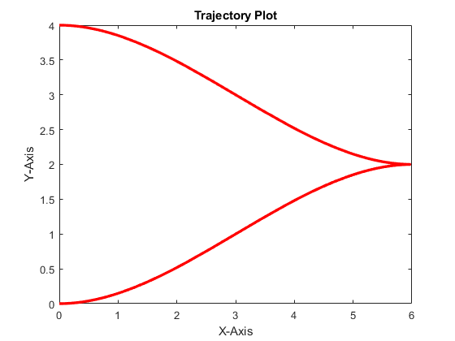
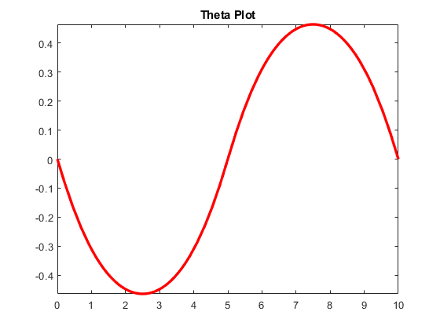
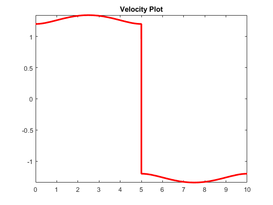
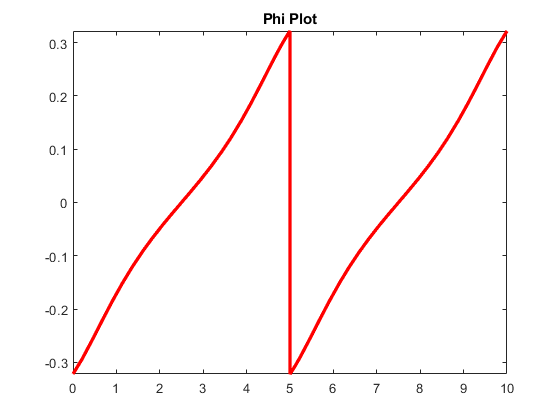
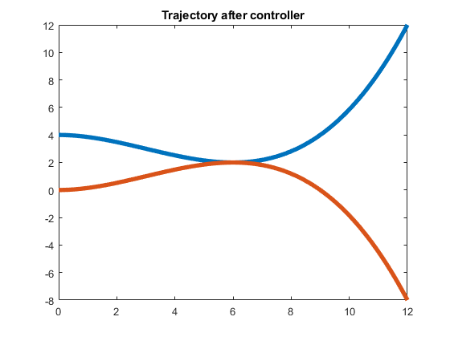
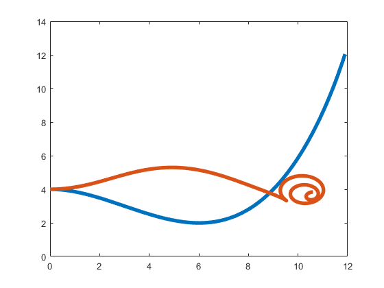

Question 1
clc;
close all;
clear all;
q0 = [0, 4, 0];
qi = [6, 2, 0];
qf = [0, 0, 0];
To= 0;
Ti = 5;
Tf = 10;
syms t
a = sym('a', [1,4]);
b = sym('b', [1,4]);
basis = [1; t; t^2; t^3];
dbasis = diff(basis)
xsym = a*basis;
ysym = b*basis;
d_x = a*dbasis;
d_y = b*dbasis;
x0 = subs(xsym,t,To);
xi = subs(xsym,t,Ti);
xf = subs(xsym,t,Tf);
dx0 = subs(d_x,t,To);
dxi = subs(d_x,t,Ti);
dxf = subs(d_x,t,Tf);
y0 = subs(ysym,t,To);
yi = subs(ysym,t,Ti);
yf = subs(ysym,t,Tf);
dy0 = subs(d_y,t,To);
dyi = subs(d_y,t,Ti);
dyf = subs(d_y,t,Tf);
[matA1,matb1] = equationsToMatrix([x0==q0(1), y0==q0(2), dx0*sin(q0(3))-dy0*cos(q0(3))==0, ...
xi==qi(1), yi==qi(2), dxi*sin(qi(3))-dyi*cos(qi(3))==0],[a(1),a(2),a(3),a(4),b(1),b(2),b(3),b(4)]);
param1 = matA1\matb1;
avec1= param1(1:4)';
bvec1 = param1(5:8)';
[matA2,matb2] = equationsToMatrix([xi==qi(1), yi==qi(2), dxi*sin(qi(3))-dyi*cos(qi(3))==0, ...
xf==qf(1), yf==qf(2), dxf*sin(qf(3))-dyf*cos(qf(3))==0],[a(1),a(2),a(3),a(4),b(1),b(2),b(3),b(4)]);
param2 = matA2\matb2;
avec2= param2(1:4)';
bvec2 =param2(5:8)';
xdes1 = avec1*basis;
ydes1 = bvec1*basis;
xdes2 = avec2*basis;
ydes2 = bvec2*basis;
x1 = @(t)xdes1;
x1 = x1(t);
y1 = @(t)ydes1;
y1 = y1(t);
x2 = @(t)xdes2;
x2 = x2(t);
y2 = @(t)ydes2;
y2 = y2(t);
x_vec = piecewise(t<Ti,x1,t>Ti,x2);
y_vec = piecewise(t<Ti,y1,t>Ti,y2);
d_x = diff(x_vec);
d_y = diff(y_vec);
D_x = diff(d_x);
D_y = diff(d_y);
theta = atan(d_y/d_x);
v = d_x*cos(theta) + d_y*sin(theta);
W1 = (D_y*d_x - D_x*d_y) / (d_x)^2;
W2 = 1/(v*(sec(theta))^2);
phi = atan2(W1*W2,1);
fplot(x_vec,y_vec,[To Tf],'-r','LineWidth', 2.5);
title('Trajectory Plot');
xlabel('X-Axis');
ylabel('Y-Axis');
figure(2);
fplot(theta,[To Tf],'-r','LineWidth', 2.5);
title('Theta Plot');
figure(3);
fplot(v,[To Tf],'-r','LineWidth', 2.5);
title('Velocity Plot');
figure(4);
fplot(phi,[To Tf],'-r','LineWidth', 2.5);
title('Phi Plot');
figure(5);
[Xdes1,X1] = ode_tracking(Tf,avec1,bvec1);
plot(Xdes1(1,:), Xdes1(2,:), 'LineWidth', 4);
title('Trajectory after controller')
hold on
[Xdes2,X2] = ode_tracking(Tf,avec2,bvec2);
plot(Xdes2(1,:), Xdes2(2,:), 'LineWidth', 4);
figure(6);
plot(X1(1,:), X1(2,:),'LineWidth', 4);
hold on
plot(X2(1,:), X2(2,:),'LineWidth', 4);
function [Xdes,X] = ode_tracking(Tf,avec, bvec)
dt=0.01;
tsteps=[0:dt:Tf];
N=size(tsteps,2);
X = zeros(3,N);
X(:,1)=[0, 4, 0];
Xdes = zeros(3,N);
for i=1:N-1
xvec = X(:,i);
x = xvec(1);
y = xvec(2);
theta = xvec(3);
theta= wrapTo2Pi(theta);
l=1;
t=tsteps(i);
basis = [1; t; t^2; t^3];
dbasis = [0; 1; 2*t; 3*t^2];
ddbasis = [0; 0;2; 6*t];
xdes = avec*basis;
dxdes = avec*dbasis;
ddxdes = avec*ddbasis;
ydes = bvec*basis;
dydes = bvec*dbasis;
ddydes = bvec*ddbasis;
thetades = atan2(dydes, dxdes);
Xdes(:,i)= [xdes;ydes;thetades];
xdes_vec = [xdes; ydes; thetades];
vf = dxdes*cos(thetades) + dydes*sin(thetades);
dthetades = 1/vf*(ddydes*cos(thetades) - ddxdes*sin(thetades));
wf = dthetades;
A = [ 0, 0, -vf*sin(thetades);
0, 0, vf*cos(thetades);
0, 0, 0];
B = [ cos(thetades), 0;
sin(thetades), 0;
0, 1];
Q= eye(3);
R = eye(2);
K = [1 1 1;1 1 1];
u = -K*(xvec - xdes_vec) + [vf; wf];
dxvec = [u(1)*cos(theta);u(1)*sin(theta);u(2)];
X(:,i+1)= dxvec*dt+ X(:,i);
end
for i=1:N;
t=tsteps(i);
basis = [1; t; t^2; t^3];
dbasis = [0; 1; 2*t; 3*t^2];
ddbasis = [0; 0;2; 6*t];
Xdes(1,i) = avec*basis;
Xdes(2,i)= bvec*basis;
end
end
dbasis =
0
1
2*t
3*t^2
Warning: Solution is not unique because the system is rank-deficient.
Warning: Solution is not unique because the system is rank-deficient.
     